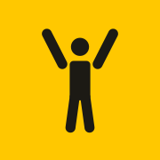
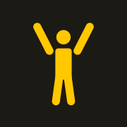
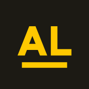
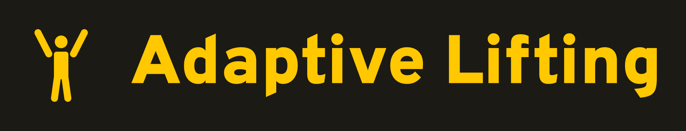
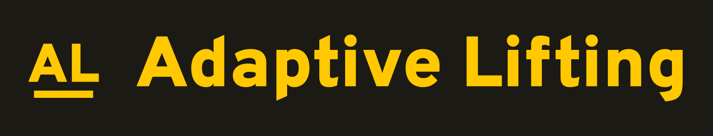
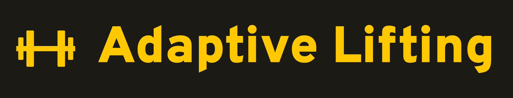

Adaptive Lifting / icon studies
Signal palette. Overpass 900. Three concepts, two grounds. Concepts only.
180 px / iOS corner preview



60 px / actual small-size renders
Horizontal wordmarks / yellow on ink

A / The lifter
Recommended: yellow ground
The familiar victory pose.

B / The lettermark
Recommended: yellow ground
Overpass AL, anchored by a bar.

C / The loaded bar
Recommended: ink ground
Stepped plates, one strong shaft.